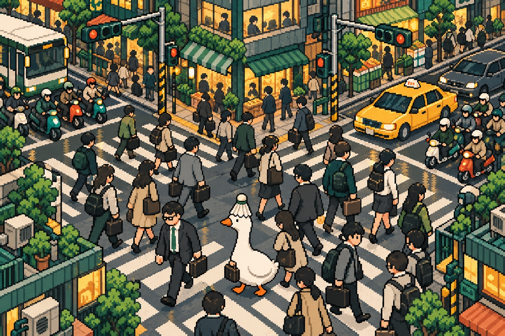
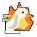

正在準備遊戲，請稍候…
主站和備援的進度各自保存在目前瀏覽器，並不會自動同步。
GOO SURVIVOR
嘎出一條生路。

電腦：WASD／方向鍵 · 手機：任意位置拖曳＋自動省電
CHAPTER 01 · MONDAY
住在台北的社畜 Goo 今天又睡過頭了！為了準時打卡，只好衝進混亂的通勤鼠潮。撐過這個星期一，晚上還要去打羽球呢！
CHAPTER GUIDE
一般怪依階段隨機出沒；精英與首領依下方時間登場。
一般出怪階段與突發怪潮分開計算；首領登場後停止一般出怪。
LEVEL UP
選擇一項能力
EVOLUTION!

武器 LV.5 搭配對應能力 LV.1，即可進化。
GOO'S BAG
本局裝備一覽。組合技配方會收錄在首頁圖鑑。
TAIPEI MONSTER ARCHIVE · 15
五大家族，各有三種體型。展開卡片查看出沒時間；一般怪為隨機出現，精英與首領為定時登場。高階造型以精英身分出現時，不使用首領專屬連招。
SKILLS
武器、能力各最多 5 種，每種最高 LV.5。升級三選一，優先保留既有裝備成長；武器 LV.3 起，能力欄有空位時會提供缺少的進化搭配。
UNLOCKED
PAUSED
SETTINGS
離線檔案準備中…
備援網站 · 網址間的進度不會自動同步。
手機自動省電。觸覺回饋依裝置支援；危險預告在精簡模式也會保留。
RUN OVER
但沒有二周目，謝謝